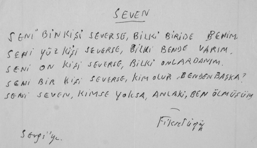
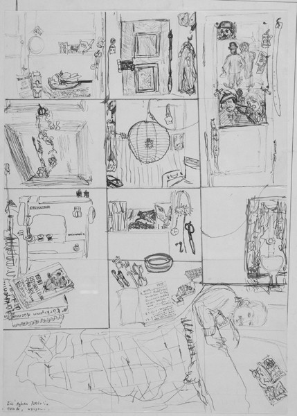
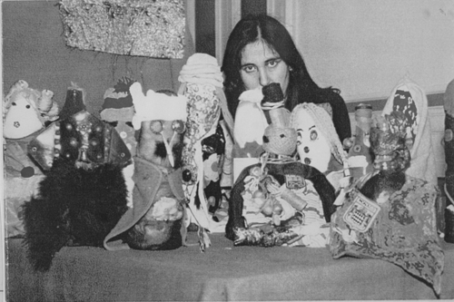

Aşksız bir dize yazılabilir mi?... İlhan Mimaroğlu müziğe âşık... Kınar Hanımın Denizleri... Bir çocuğun yüreğindeki eğrilik... Ustangul Türkçesi... Ali Korna kâğıdı... Jean Vigo hal ve gidiş sıfır... Tarihe bakılırsa anlaşılır... Tarihi sarışınlar yazmıştır... Tarih ayağa kalkmakla görülebilecek bir şey değildir... Kimi kelimeler yumuşak huylu, kimisi çatık kaşlı olur... Şiir bu topraklarda sürgünde yaşar... Bir çatlak borazan gibi çıksa da halk çocuklarının sesleri...
Ece ile çok gülerdik. Hiç gülmediğimiz günler de olmuştur: Deniz Gezmiş, Yusuf Aslan, Hüseyin İnan’ın asıldıkları gün öğleden sonra Çengelköy’den Kuzguncuk’a, Kuzguncuk’tan gene Çengel’e yerlere bakarak deniz kenarından yürüdük. Ece hep yerlere bakarak durmadan konuştu. “İbret-i âlem olsun diye astılar onları,” dedi. Hayıflanıyordu. “Niye bu gençler İstanbul’da saklanmadılar da ele geçtiler,” diye. “Fareler bile büyük şehirde saklanırlar,” dedi. O gün o yolda Heinrich von Kleist’ın Michael Kohlhaas’ından söz etti durdu. “Pire için yorgan yakar Michael Kohlhaas. Tabii! Yakacaksın bir pire için yorgan! Haklılığın inadı vardır. Sen yoluna kimseye sormadan devam et. Taşlayacaklar seni. Olsun. Aldırma. Dosdoğru git. Elmalı ağacı taşlarlar.”
Düşünürüm, yerlere bakarak yürüdüğümüz bu uzun yol Ece’nin Çok Eski Adıyladır’daki şu şiirine mi girmiştir acaba?
GÖRMEDİK!
1. Avcılar gazalları öldürür Anadolu balkanlarında. Gazal kaçar yaralanmışsa, avcı kovalar.
2. Çilli gazal bir tebeşire sığınsın sözgelimi ya da bir dünya dergâhına. Avcı da dalar.
3. İki yeniyetme kara tahtayı siliyorlardır ya da çamaşırlarını çiteliyorlardır.
4. “Buraya giren bir gazal gördünüz mü?” der Şahmârdân.
5. Sınıfdaki ya da avludaki gazallar; tarihten 1971 yaz ayları Çengelköy’üne geliyoruz; “hayır” derler, “görmedik!”
Ece, Çengelköy’den, yıl 1974’tü herhalde, Boğaz’ın Kanlıca’dan sonra gelen semtine, semtin adını unuttum, galiba Çubuklu’ydu, taşındı. Onat Kutlar da komşusuydu. Ben de o sırada Çengölköy’e taşınmıştım.
1974 Ekimi’nde Cerrahpaşa Hastanesi’ne yatırıldı. Beyninde ur olduğu ortaya çıktı. Cerrahpaşa’ya gittim. Yanında başka hastalar. Kör bir çocuk... İkide bir de odanın bir köşesinden ötekine giden bir fare.... Akşam evde karanlıkta oturuyorum. Onat Kutlar haber bırakmış. Telefon ettim. Onat Kutlar bana “Sevgi, sen Almanca biliyorsun. Ece seni sever, sen Ece’yi. Ağabeyin de üstelik İsviçre’de. Sen Ece’yle Zürih’e uçacaksın,” dedi.
Can Yücel’in okul arkadaşı, ünlü beyin cerrahı Gazi Yaşargil, Zürih Kantonspital hastanesinin baş cerrahıydı. –Can’ın babası Hasan-Âli Yücel, zamanın Kültür Bakanı, bu yoksul öğrencinin bursla Avrupa’ya gitmesini sağlamış.– Gazi Yaşargil, Can Yücel’e “Şairi gönderin, ben ameliyatını yaparım,” demiş.
Ben uçaktan çok korkardım. Çok sevdiğim ve yıllardır görmediğim, politik nedenlerden Türkiye’ye dönemeyen ağabeyim Ali de İsviçre’de okuyordu. Ece’nin de hayatı söz konusu. Uçak korkum, bu iki aşk yüzünden, sesini kıstı. Birkaç gün içinde bütün işlemler tamamlandı.
Biz Ece’yle Zürih’e uçmadan bir gece önce, birlikte oturduğum babaannemi Can Yücel’le Ece’nin annesine emanet ettik. Babaannem, ben Ece ile İsviçre’deyken her sabah Ece’nin postacısına “Sevgi ne zaman geliyor?” diye sorup durmuş. Apartopar İsviçre’ye gidileceği için babaannemle evdeki tüm etleri, ziyan olmasın diye, son akşam kızartıp yemiştik. Et de çok pahalıydı her zamanki gibi.
Bülent Ecevit’ten Yaşar Kemal’e, Yazarlar Sendikası’ndan Ece’yi seven bir yığın insana kadar pek çok insan para yardımında bulundu, Ece’nin Zürih’teki giderleri ve hastane masrafları için. Biz Zürih’e uçtuk.
Uçakta korkumu yenmek için uzak yol gezer gemi doktoru şair Fikret Ürgüp’ün benim için yazdığı bir şiiri hiçbir şey anlamadan okuyup duruyordum:
SEVEN
SENİ BİN KİŞİ SEVERSE, BİL Kİ BİRİ DE BENİM.
SENİ YÜZ KİŞİ SEVERSE, BİL Kİ BEN DE VARIM:
SENİ ON KİŞİ SEVERSE, BİL Kİ ARALARINDAYIM.
SENİ BİR KİŞİ SEVERSE, KİM OLUR BENDEN BAŞKA?
SENİ SEVEN, KİMSE YOKSA, ANLA Kİ, BEN ÖLMÜŞÜM.

Fikret Ürgüp
Sevgi’ye.
Zürih’te, Ece hastanedeyken bir günlük tutmuşum. Nedenini bilmiyorum. Belki yalnızlık. Belki hüzün.
Şimdi bunları yazarken günlükte olmayan bir şey hatırladım: Ece’nin Zürih’te, hastanede ikinci günü. Kontrolleri yapılıyor. Hastanedeki bir asistan doktor Ece’ye “Kitabınızı okuyorum, 38. sayfadayım,” dedi. Ece de, ertesi gün ameliyat olacak, güldü, “Şiirin sayfası mı olur?” dedi. Ameliyatı ve ondan sonraki günleri günlükte anlatıyorum. Burada anlatmayacağım.
Ece, hastaneden çıktıktan sonra bir süre daha Zürih’te kalmak istediği için, Zürih’te tanıştığım, matematikçi, Türkçe bilen Joos Heintz, arkadaşı Peter’in evinde Ece’nin üç hafta kalmasını sağladı. Ama Ece’ye uzun vadeli bir ev bulmam gerekiyordu. İsviçreli bir kadın belki evinin bir odasını ona verebilirmiş. Joos bana “Ufak bir yemek yap, kadını çağıralım, Ece ile tanışsınlar,” dedi. [2] İsviçre Frankına yarım tavuk aldım. Pirincin içine tavuğu küçük küçük doğradım. Tavuklu pirinç pilavı pişirdim. Bir de bir litre ucuz şarap aldım. Ece, birden bana kızdı: “Paralarımla İsviçrelilere ziyafet çekiyorsun,” dedi. Beni suçladı. Laf anlamıyor. Bu birkaç Franklık yeme-içme masrafını ona ev bulmak için yaptığımı nedense bir türlü kabul etmedi.
Bir de Ece evde yerde bir iğne bulmuş. Bu iğneyle kendisini öldürmeye yeltendiğimi düşündü. Onu hastaneye kontrole götürdüğümde Gazi Yaşargil’e hafifçe çıtlattım: “Ece beni tuhaf şeylerle suçluyor Yaşargil Bey!” Yaşargil de, “Ece Ayhan paranoyaktır. Kaçın burdan, anası değil, karısı değil, kız kardeşi değilsiniz. Size çok ağır suçlamalarda bulunacak. Paranoyak o, kendinizi tehlikeye atıyorsunuz. Kaçın bir an evvel!” dedi.
Kaçamadım. Durumu hiç de kolay değildi. Ece’yi yalnız bırakamıyorum. Ona bir ev bulana, annesi ile Mehmet İsviçre’ye gönderilene dek, Ece’nin yanında kaldım. Ece, Türkiye’ye yazdığı mektuplarda “Sevgi paralarımı Zürihlilere yedirdi. Dans etti, bana bakmadı,” diye beni suçladı. Gönenç Kurtiz o zaman İsviçre’de. Oturup Onat Kutlar’a bir mektup yazdı: “Bu kızın burada dişi düştü. Dişçiye gidemiyor parasızlıktan dişini yerine yapıştırtmak için. Diş bir bardağın içinde duruyor.”
Ece’yi annesine bırakıp İstanbul’a döndüm. Çok kötüydüm. Onat Kutlar bana inandığını söyledi. İsviçre’de Zürihli arkadaşım Joos, Ece’ye para yardımına devam etti.
1975’te Brecht’in öğrencisi rejisör Benno Besson’la çalışmak üzere İstanbul’dan trene bindim, Berlin’e geldim.
O sırada sevdiğim arkadaşlarım Can Yücel ve Memet Fuat’la sık sık telefonlaşırdım. Ece’nin kendisine yardım eden herkesi duman ettiğini duydum. İstanbul’a bir gidişimde Onat Kutlar elleri ayakları titreyerek Ece’nin ona ettiklerini anlattı: “Karabasan oldu bana Ece,” dedi. Can Yücel de Ece’nin gazabına uğramış. Daha bir yığın insan. Ece’yi suçlayamıyordum. Hasta o. Hasta ne yapar? Bu işte hastalık.
Yıllar geçti aradan. Yıl 1989. Batı Berlin’deyim. Annem babam arka arkaya ölmüşlerdi. Çok ıstırabım vardı. Ece Ayhan Berlin’deymiş! Arif Çağlar’ın evinde kalıyormuş. Yıllar sonra karşılaştık. “Ne güzel yahu, ne güzel!” diye sarıldı. Yazdığı bir kitapta bana bir iki laf vurmuş. Onu da söyledi. Sonra da “Sevgi anlar bunları. Ben epey abarttım. Ama Sevgi anlar, dedim,” dedi.
Berlin’in ana caddesi Kudamm’da plastik torbalarıyla barikat kurmuş evsiz barksız bir kadına bayıldı. Bu kadın, kimseyi yanına yanaştırmaz, kimseye kulak asmaz, gözünde güneş gözlüğü bir sandalyede otururdu. “Çanakkaleli Melahat’ın kız kardeşi bu!” dedi Ece. “Biliyor musun, Çanakkaleli Melahat komiserin odasında ağırlanırmış...”
Ece, Arif Çağlar’la gitmiş. On kilosu on mu yirmi mi mark tutan elden düşme elbiseler satan bir depodan Arif Çağlar ona kiloyla elbise almış: Ceket, pantolon, palto, şapka. Şapkaya bayılıyordu. Kiloyla bu kadar ucuza elbise satın alınmasına da bayılmıştı. O sıralar Cemal Süreya, Cihat Burak, İlhan Usmanbaş’la röportajlar yapmıştı, ya da yapacaktı. “Sevgi, bir de senle yapalım,” dedi.
“Ben konuşamam ki.”
“Ben seni konuştururum.”
Oturduk bir kahvede. İlk sorusu.
“Ingmar Bergmann’ın karısı Liv Ullmann hakkında ne düşünüyorsun?”
“İsveç’in Muhterem Nur’u.”
Ece kıkır kıkır güldü.
“Oğuz Atay hakkında ne düşünüyorsun?”

Sevgi Özdamar’ın çizimiyle Ece Ayhan. Peter’in evinde uyurken ve Peter’in evinden detaylar...
“İki beyni vardı. Annem ölünce tekrar tekrar okuduğum kitap Tutunamayanlar’dı. Ben Oğuz Atay’a tutundum. Istırabıma en iyi gelen Oğuz Atay’dı. Bir de Van Gogh’un ağabeysine mektupları...”
“Ahmet Hamdi Tanpınar deyince ne gelir aklına?”
“ İstanbul’un mezarlıkları.”
“Ne kadar doğru yahu. Orospu nedir sence?”
“Kadın evliyalar.”
“Jean Vigo?”
“Hal ve Gidiş Sıfır’da senin sevmediğin öğretmenleri, çocuk öldüren devlet derslerini o da sevmez. Senin dalgasever çocukluk arkadaşındır.”
“Luis Buñuel?”
“İspanya’da halk faşistlere karşı silahlanmış, silahlarını göstere göstere caddelerden geçiyorlar. Buñuel bir otelin penceresinden bunu seyrediyor. Ağlıyor. Bir gece Buñuel’i Berlin’de rüyamda gördüm. Bana çocukken yaptığı bir saati hediye etti. Saati duvara astım. Tik tak tik tak... Saat işlemeye başladı.”
Ece notlarını o kadar karışık tutuyordu ki, “Ece işin içinden çıkabilecek misin?” soruma, “Ben hep böyle çalışırım. En dağınık sandık odalarının, dağınık tavan aralarının bile kendi mantığı vardır” dedi.
Ece’nin unutamadığı olaylar vardı her zaman. Anımsatır, sonra üstüne ilginç yorumlar katardı.
“1989’da Evita oyununun galasında Harbiye Açıkhava Tiyatrosu’nda ‘Yuh! Taşra maymunları!’ diye bağırmışsın. Oyunu sahneleyen Can Gürzap da ertesi gün Milliyet gazetesine verdiği röportajda senin için ‘Sinema oyuncusu Semra Özdamar’ın ablası, Emine adlı akıl hastası olduğu bilinen biri “Yuh! Taşra maymunları...” diye bağırdı’ deyiverdiydi...”
Oyunu çok kötü bulmuştum, “Yuh!” diye bağırdım. O arada Can Gürzap polislerle üstüme gelince dayanamayıp “Taşra maymunları!” dediydim. Ece unutmamış tabii... “Herife bak yahu, polisle kötülük dayanışması içinde! Kötülüğün koyuluğuna bak! Bittim yahu senin bu ‘taşra maymunları’ lafına... Ne kadar doğru yahu!” diyordu.
O akşam oyunum olduğu için Ece’yi seven bir arkadaşa, Orhan Güner’e rica ettim. Bir kurufasulye pişirsin diye. Orhan’ın evine çıkan merdivenlerde Ece annesinin ölümünden bahsetti. “Annem sokaklarda öldü. Köyde ekmek dilenerek öldü. Delirmiş annem. Delirerek ölmüş köyde. Ama biz postu vermeyeceğiz!”
“Annem öldükten sonra biz kardeşler yıldızlar gibi dağıldık,” dedim Ece’ye. “Şimdi onlar birisinin onları bir araya getirmesini bekliyor.” Ece, bana, “Anne ol onlara, ne var?” dedi.
Gene merdivenlerde İdris Küçükömer’den bahsetti. Onu çok beğeniyordu. “Türkiye’de sol sağdadır, sağ da solda” der İdris Küçükömer.” Galiba Cemal Süreya’yı herkesten çok seviyordu. Bir de dilinden düşürmediği Nilgün Marmara’yı.
Arkadaş, Ece’yle gidip alışveriş yapıyor. Kuru fasulye pişiriyor. Ben tiyatrodan çıkıp geldim. Yiyoruz. “Ece abi, nasıl olmuş?” diye sordu arkadaş. “Olmamış!” dedi Ece. Ben gelmeden Ece arkadaşa anlatmış durmuş. Ece’nin dokuz on kere arkadaşa anlattığı şey marjinallik. Arjantinli bir ekonomist “Buğdayın fiyatını en uzaktaki buğday tarlaları belirler” demiş. Bu da Ricardo’nun Rant Teorisi’ymiş. Arkadaş da “Ben böyle bir adam ve teorisini hiç duymadım,” demiş. Ece gülüyor, “Ben şairim, uydururum!” diyor.
Öğretmen şairlerden, dürüst şairlerden biri. Anadolu’ya sigorta yapmaya gidiyor. Şairi küçük düşürmek için belediye başkanı şaire, çükünü ima edip, “Benim küçüğü de sigorta eder misiniz?” diye soruyor. Şair de “Bir götüne!” diyor.
Ece’nin bir ara İlhan Berk’le arası bozuk. İlhan genç bir şairle haber göndermiş. “İlhan Bey dedi ki, Ece her şeyi iki kez tekrar etmesin. Gerek yok. Herkes anlar.” Ece’nin cevabı: “Bundan sonra üç kere tekrar edeceğim. O zaman İlhan da anlayacak!”
Ece Berlin’deyken ilk kitabım Mutterzunge (Annedili) yayımlandı. Ece kitabı eline aldı, evirdi çevirdi. Biraz beni konuşturdu. “Bu kitaba ‘Anadili’ değil, ‘Annedili’ diyeceğiz!” dedi. Çok doğruydu. Türkiye’ye gittiğinde Cumhuriyet Kitap’ta bir de yazı yazdı.
Emine Sevgi Özdamar’ın ilginç romanı: Annedili
Bir uzak akraba mı?
ECE AYHAN
Düşünüyorum. “Emine” Sevgi Özdamar’ın; Sevim Burak, Tezer Özlü ve Nilgün Marmara gibi cins ve önemli yazarlarla, şairlerle acaba uzak akrabalığı var mıdır?
“Emine” Sevgi Özdamar biraz ufak, ama güzel, kamuoyunca özgün kuklalarıyla ve de kukla yapımcılığı da bilinen tiyatrocu bir yazarımızdır. Belki onun adını Kuzey Berlin’de Volksbühne’deki oyunculuğuyla ya da “Karagöz Almanya’da” oyunuyla duymuşsunuzdur. Tabii Volksbühne’nin yer değiştirmesinden, yani Kudamm’a gelip nitelik düşürmeden önce.
Evet, “Emine” Sevgi Özdamar, 1970’lerde yalnız tiyatro oyunculuğu yapardı. (Ayrıca çok yetkin bir biçimde Altunizade’de kanto söylemiş ve oynamıştır, 1971).
1974 ekimi’nde de benim bir sağaltım işim için birdenbire, İsviçre’ye, Zürih’e birlikte gitmiştik. 1990’larda Berlin’de Alman Arif’te kalırken görüştüğümüzde ise tiyatroculuğunun, sinema oyunculuğunun, kuklacılığının ve ressamlığının yanında yazarlığını, romancılığını geliştirmiş ve yazar olmuş olarak bulmuştum.
Annedili adını taşıyan roman benim de çok iyi tanıdığım Rotbuch Yayınevi’nde yayımlanmıştır.
Yazımın başında “Emine” Sevgi Özdamar için Nilgün Marmara, Tezer Özlü ve Sevim Burak’la uzak akrabalığı var mıdır? demiştim. Bence bütün bu kuklacılar, kuklalar, kedimerdivenleri, çarkıfelekler, fırıldakçiçeği, usturlaplar, uçurtmalar, Karagöz sûretleri; Beberuhiler, Zenneler, Araplar, Çelebiler, Lazlar, Devrihindiler, Curcunalar, Tuzsuz Deli Bekirler, düz mastika, Frenkler, Kilci, Anadolulu, Hamamcı Kadın; Karagöz yatakta, Karagöz’ün hamamda dayak yemesi, Balkan’da Karagöz neler görmüş, Karagöz Mısır’da, Karagöz İngiltere’de, Karagöz’ün gelin oluşu, Karagöz’ün ters evlenmesi... Şairlere ipucu verebilir.
Aslında Türkiye’de son yıllarda düzyazının bir yükselişi oldu. Metin Kaçan, Nihat Genç, Cezmi Ersöz... vesaire gibi. Evet, şiirde ayrı (küçük İskender, Turgay Özen, Sami Baydar, Metin Göz) düzyazıda da gerçek bir atılım var. Anladığınca; Sait Faik, Yusuf Atılgan, Vüs’at O. Bener ve Tahsin Yücel “eczalı” çizgisindedirler bunlar çünkü.
(Cumhuriyet Kitap, 8 Ağustos 1991)
Ece, Berlin’den İstanbul’a döndükten sonra onun bunun yanında oturduğunu duyuyordum. Akrabalarına çok sık telefon ederdim. Sonra Çanakkale’ye geçti. Yeğeniyle oturmaya başladı. O sırada Paris’te tiyatroda oynuyorum. İkinci kitabım yayımlandı. Ödüller alınca paralar geldi. Ece’ye sık sık para yolladım. Telefonda bana, “Hızır gibisin yahu, sen babanı çok sevdin değil mi Sevgi?” dedi. “Evet. Bunlar Sultantepe’nin gecikmiş kiraları!” derdim şakasına. Kıkır kıkır gülerdik.
Ece benimle Berlin’de yaptığı röportajı çaldırmış. Galata Köprüsü’nde çantası çalınıyor. Kâğıtlar da içinde gitmiş.
İlk romanım Hayat Bir Kervansaray’ın Türkçesini okumuş. “Ne kadar sahici bir roman!” dedi. Metin Kaçan’dan sık sık bahsederdi. Ağır Roman’a bayılırdı.
Romanım çıktığında İstanbul’a gittim. Tabii Memet Fuat ve Can Yücel’le çok sık görüştüm. Ece’den de laf açıldı. Kendisiyle sık sık telefonlaştığımı söyledim. Memet Fuat, “Valla, en cesur sen çıktın,” dedi. Demek ki, Ece’den çok kişinin canı yanmış! Ama artık görüşmeseler de, onun haberleriyle ilgileniyorlar ve ona acıyorlardı.
Ece, bir telefonlaşmamızda televizyonunu tamir eden iki delikanlıdan söz etti. “Delikanlılar burda!” dedi. Sonra kıkır kıkır gülüp, “Sadece bakıyoruz, Allah ne verdiyse. Aşk biterse sanat da biter. Yaşı yoktur. Allah ne verdiyse, delikanlıları seyrediyorum. Onlar da dönüp gülüyorlar. Bana ‘abi’ diyorlar...” dedi.
1998 yılında Çanakkale’ye, Ece’ye gittim. Yanımda İspanyol arkadaşım. Bir şapka, çanta, kazak. Ece sevindi. “Sen babanı çok sevdin, değil mi?” Yeğeninin yanında kalıyordu. Büyükçe bir ev.

Sevgi Özdamar’ın, Brecht’in Kafkas Tebeşir Dairesi için yaptığı kuklalar. (Avignon Jean Villard Müzesi’ndeler.)
Yatağı bir köşeye sıkışmış. Birkaç kitap, kâğıt kalem pencere içinde. Eşya o kadar. Bir de ufak bir masa, iki sandalye falan. Mutfakta ona dolma, kurufasulye pişirirken bana hep Cemal Süreya ve Nilgün Marmara’dan söz etti.
Çok hastaydı. Boynu ağrıyordu. Bir yığın ameliyat. Yüzü felçli. “Ama postu bırakmayacağız!” dedi. “Faulkner bir romanının sonunu ‘katlandılar’ diye bitirir. ‘Katlandılar.’ Katlandık bunca şeye, katlanacağız tabi.”
Çocukluğunu, fakirliğini Cemal Süreya’nın fakir çocukluğunu sık sık tekrarladı. Kuru fasulyeye “Oh, be!” dedi. Yanımdaki İspanyol arkadaşım için hemen “Kocan mı yoksa sevgilin mi?” diye sordu. “Sevgilim!” “İyi, evlilik sıhhate mugayirdir!”
Sabah altıya dek oturduk. Hep Ece konuştu. “Gene gel, olur mu canım?” dedi. Ertesi gün evinin balkonunu gösterdi. Bu balkonu görmek için bir odadan geçtik. Oda bomboştu. Balkona varabilmek için örümcek ağlarını deldik. Bu boş odanın tam ortasında, piramit biçiminde, kaskatı olmuş bir halı duruyordu. Belki yıllar evvel oraya getirilmiş, serilmeden öylece orada unutulmuş bir ceset gibi kalmış. Üstü toz ve örümcek ağıyla kaplıydı.
Ece, Çanakkaleli Melahat’ın bir heykelinin dikilmesini istiyordu. Kendi oturduğu yere yakın. Ben giderken iki kitap imzaladı. Yalnız Kardeşçe. Çanakkaleli Melahat’e 2 El Mektup ya da Özel Bir Fuhuş Tarihi.
Ece’yi son görüşümdü bu. Sonra Berlin’den sık sık telefonlaştık.
Onat Kutlar öldürüldüğünde, “Onat Kutlar’a mahvoldum!” dedi. Can’ın ölümüne de, “Can gitti, yahu, postu bıraktı!” dedi. Ölümüne az kalana kadar her telefonda Cemal Süreya’dan konuştu.
Hastanelere düşünce telefonlaşamaz olduk.
Ece’nin ölümünü bir arkadaşım duymuş. Telesekretere, bana haber bırakmış.
“Başın sağ olsun Sevgiciğim, Ece gitmiş!”